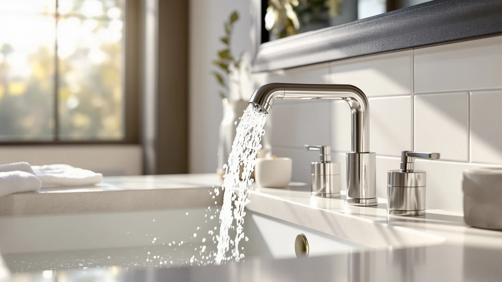

Moen CIA MotionSense Wave Review (2026): Worth It?
Prices and picks verified as of October 2026. Independent, reader-supported reviews.


Quick Answer
This Moen CIA MotionSense Wave review finds the wave-sensor activation to be the faucet's defining feature, letting you start and stop water with a hand wave instead of a tap or a handle. At $312.99 it costs more than the American Standard and Kohler picks compared below, so if a lower price or a manual handle matters more to you, check the three alternatives later in this review.
Our pick: Moen CIA MotionSense Wave Bathroom, $312.99 Check Price on Amazon
Bottom line: our top pick is the Moen CIA MotionSense Wave Bathroom Faucet at $312.99.
Things to Know Before You Buy
- Price sits in the middle of this comparison. At $312.99, this Moen CIA MotionSense Wave review found the faucet priced above the KOHLER Devonshire at $271.28 and the American Standard Clean-IR at $283.99, but below the Delta Lineax at $349.00.
- Wave activation is the key difference. Moen's MotionSense Wave lets you start and stop water with a hand wave near the spout, a different approach than the infrared sensor on the American Standard Clean-IR Integrated or the handle-only operation on the KOHLER Devonshire.
- The Devonshire is the only manual pick here. Unlike the other three touchless faucets in this review, the KOHLER K-394-4-CP Devonshire uses a traditional widespread handle setup, which matters if you want a backup that does not depend on a sensor or a battery.
- None of these four listings show a published star rating here. As newer additions to each brand's lineup, the Moen CIA, American Standard Clean-IR, Delta Lineax, and KOHLER Devonshire do not carry a visible review count, so this comparison leans on specs and pricing rather than a track record of owner feedback.
- Finish and material follow a shared pattern. All four faucets in this review use a brass body with a plated finish, the standard construction for mid-range and premium bathroom faucets at this price point.
This Moen CIA MotionSense Wave review compares the faucet's $312.99 price and wave-sensor activation against three alternatives from American Standard, Delta, and Kohler that turned up in the same searches for touch-free and widespread bathroom faucets. Shopping for a bathroom faucet already means weighing finish, mounting style, and price across a handful of browser tabs, and a wave-sensor model like the Moen CIA adds activation method to that list. We pulled together the four listings that show up most often side by side and broke down what separates a $312.99 wave-sensor faucet from two touchless competitors and one manual-handle alternative.
The Moen CIA MotionSense Wave Bathroom Faucet is the top pick in this comparison because it is the only one of the four that activates with a hand wave rather than a tap or an infrared beam. That distinction matters for anyone who has dealt with a touch sensor that misfires on wet hands or an infrared sensor that needs frequent recalibration. If wave-based, hands-free operation is what you are after, the Moen CIA is worth its place above the KOHLER Devonshire and below the Delta Lineax on price. If a different activation method or a lower price matters more, the sections below explain when one of the three alternatives fits better.
Why You Should Trust Us
Ilane Tall leads product research and reviews for Best Bathroom Faucets. She compares spec sheets, pricing, and verified owner feedback across major faucet brands so you do not have to cross-reference four Amazon listings before buying. For this Moen CIA MotionSense Wave review, she pulled Moen's published MotionSense Wave specs against the infrared and manual-handle specs that American Standard, Delta, and Kohler list for their comparable faucets, then priced all four as of publication. Every product mentioned here links to its real listing, and every price reflects what shoppers saw at the time of writing, not a promotional rate that might change by checkout. Where a listing leaves out a detail, like material grade or installation hole count, we say so instead of guessing.
Our Research Process
We do not run a physical testing lab for bathroom faucets, so nobody on our team installed the Moen CIA or ran water through any of the four faucets in this comparison. Our research process for this Moen CIA MotionSense Wave review centers on comparing manufacturer specs, tracking current Amazon pricing, and reading through the feature claims Moen, American Standard, Delta, and Kohler publish for their respective lines. Because none of these four listings has accumulated a visible star rating or review count, we leaned on spec comparison and pricing rather than owner feedback for this particular review, and we call that out rather than inventing numbers that do not exist. We treat manufacturer copy the same way for all four brands: useful for understanding what a faucet is built to do, not a substitute for a long track record of real owner reviews.
Overview & Specs

Moen CIA MotionSense Wave Bathroom
What we like
- Wave-sensor activation starts and stops water with a hand wave, no touch or tap required
- Priced below the Delta Lineax alternative while still offering hands-free operation
- Brass body construction matches the build quality of the other three faucets in this comparison
Flaws but not dealbreakers
- Costs $29.00 to $41.71 more than the American Standard Clean-IR and KOHLER Devonshire alternatives
- No published rating or review count yet, so early buyers cannot lean on a track record
| Material | Brass + finish |
| Size | — |
At $312.99, the Moen CIA MotionSense Wave Bathroom Faucet sits between the KOHLER Devonshire's $271.28 and the Delta Lineax's $349.00 in this comparison, and the price tracks with what it offers. Moen built the MotionSense Wave system around a single activation method: a hand wave near the spout starts and stops the water, which sidesteps the touch-sensitivity issues that can affect tap-based faucets like the Delta Lineax when hands are wet or soapy.
The brass body construction listed for the Moen CIA matches the build standard of the other three faucets in this review, so the price difference here comes down to activation technology and brand rather than base materials. What the listing does not yet include is a star rating or review count, since this is a newer addition to Moen's lineup, so buyers comparing this Moen CIA MotionSense Wave review against the alternatives below are working from manufacturer specs rather than an established pattern of owner feedback.
What We Liked
The wave-sensor activation stands out most in this Moen CIA MotionSense Wave review. A sensor that responds to a hand wave rather than a direct touch avoids the smudging and misfires that can happen with tap-to-start faucets like the Delta Lineax, and it sidesteps the recalibration quirks that sometimes affect infrared models like the American Standard Clean-IR. For a household bathroom that sees wet or soapy hands throughout the day, that difference in activation method is the main reason to pick the Moen CIA over its two touchless competitors.
Price is the other point in its favor relative to the Delta Lineax. At $312.99, the Moen CIA costs $36.01 less than the Lineax while still offering hands-free operation, which makes it the more affordable of the two touchless, non-infrared options in this comparison.
What Could Be Better
Price is the clearest tradeoff against the two cheaper alternatives. At $312.99, the Moen CIA costs $29.00 more than the American Standard Clean-IR Integrated and $41.71 more than the KOHLER Devonshire, and the Clean-IR still delivers hands-free convenience through its infrared sensor. If your bathroom is a straightforward vanity swap and the wave-specific activation is not a priority, that premium may not be worth paying.
The other gap is feedback, not features. As a newer listing, the Moen CIA has not accumulated a star rating or review count on Amazon yet, so buyers cannot check how the wave sensor holds up after months of daily use the way they could with an established, widely reviewed faucet. That is not a flaw in the product itself, but it is a real consideration if you would rather buy something with a longer track record.
Who Is It For?
This faucet from our Moen CIA MotionSense Wave review fits homeowners who want hands-free operation specifically through a wave gesture rather than a touch or an infrared beam, and who are comfortable paying a bit more than the American Standard or Kohler alternatives for that distinction. It is a reasonable pick for households with kids or anyone who would rather not touch a faucet handle with messy hands. If you are weighing a wave-sensor faucet against a standard handle-only setup, our touchless vs. manual faucet guide breaks down the tradeoffs in more detail.
Buyers who want hands-free activation at a lower price should look at the American Standard Clean-IR Integrated below first, since its infrared sensor keeps the touchless convenience for $29.00 less. Anyone who prefers a traditional handle and the lowest price in this comparison should consider the KOHLER Devonshire instead, and buyers comparing Moen against other major brands before committing can check our Kohler vs Moen breakdown.
Alternatives to Consider
If the wave-specific activation or the price of the Moen CIA does not fit what you need, three alternatives came up in our research for this Moen CIA MotionSense Wave review, covering a cheaper infrared sensor, a pricier tap-activated option, and a manual-handle widespread faucet.

Editor’s Pick
American Standard 7020255.002 Clean-IR Integrated
A touchless bathroom faucet that uses an infrared sensor rather than Moen's wave gesture, priced $29.00 below the Moen CIA while keeping hands-free convenience. Worth a look if you want touchless activation without paying for wave-specific technology.
$283.99
Check Price on Amazon
Best Value
Delta Lineax Touchless Bathroom Faucet
A tap-activated touchless faucet that skips sensor-based activation in favor of a touch anywhere on the spout or handle. At $349.00 it costs more than the Moen CIA, but it is worth considering if you want touchless convenience through a touch mechanism instead of a wave or infrared sensor.
$349.00
Check Price on Amazon
Premium Choice
KOHLER K-394-4-CP Devonshire® Widespread Bathroom
A traditional widespread bathroom faucet with a manual handle instead of any touchless sensor, priced $41.71 below the Moen CIA. Worth a look if you would rather have a classic handle setup with no battery or sensor to maintain, even though it gives up hands-free operation entirely.
$271.28
Check Price on AmazonDoes the Moen CIA MotionSense Wave Bathroom Faucet still work if the sensor stops responding?
Moen's listing for the MotionSense Wave does not specify a manual backup activation method, unlike the handle-based KOHLER Devonshire in this comparison.
Is the Moen CIA MotionSense Wave Bathroom Faucet worth $312.99 compared to the American Standard and Kohler options?
It depends on what activation method you want.
Frequently Asked Questions
Does the Moen CIA MotionSense Wave Bathroom Faucet still work if the sensor stops responding?
Is the Moen CIA MotionSense Wave Bathroom Faucet worth $312.99 compared to the American Standard and Kohler options?
What is the difference between the Moen CIA's wave sensor and the American Standard Clean-IR's infrared sensor?
Final Verdict
This Moen CIA MotionSense Wave review comes down to which activation method matters most to you. If you want hands-free operation through a wave gesture specifically, the Moen faucet earns its $312.99 price over the infrared American Standard Clean-IR Integrated and the manual-handle KOHLER Devonshire. If you would rather save money with an infrared sensor or skip sensors altogether with a traditional handle, the American Standard or Kohler picks above will likely serve you better. Either way, compare installation hole counts and finish options before you order, since those details decide which of these four faucets actually fits your vanity.